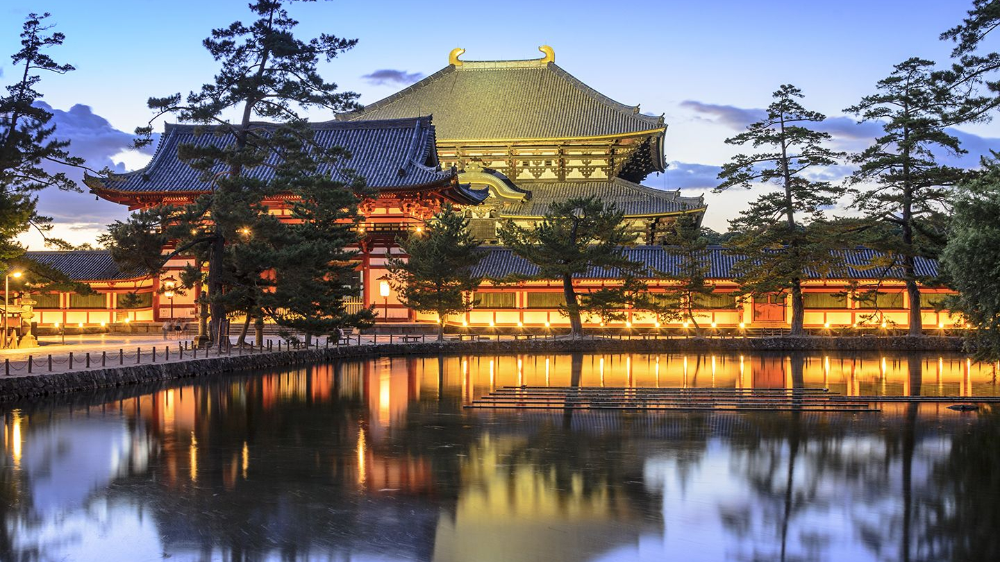
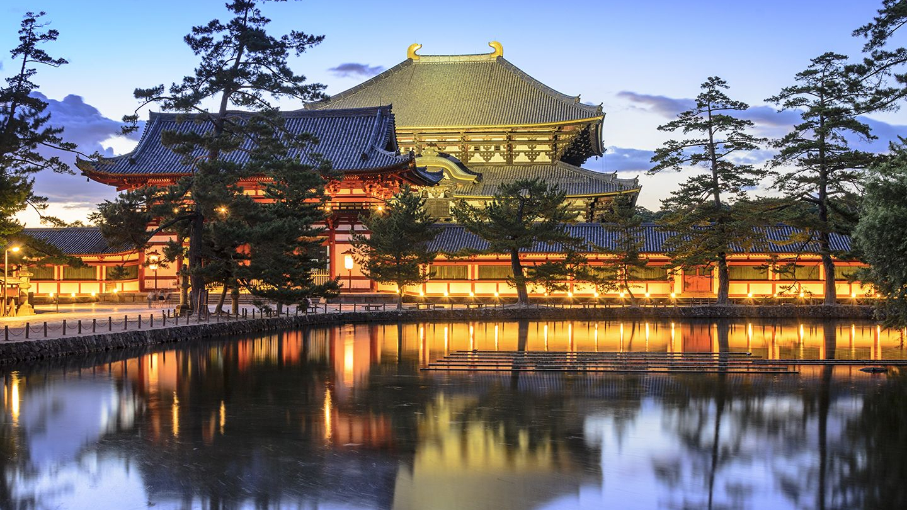
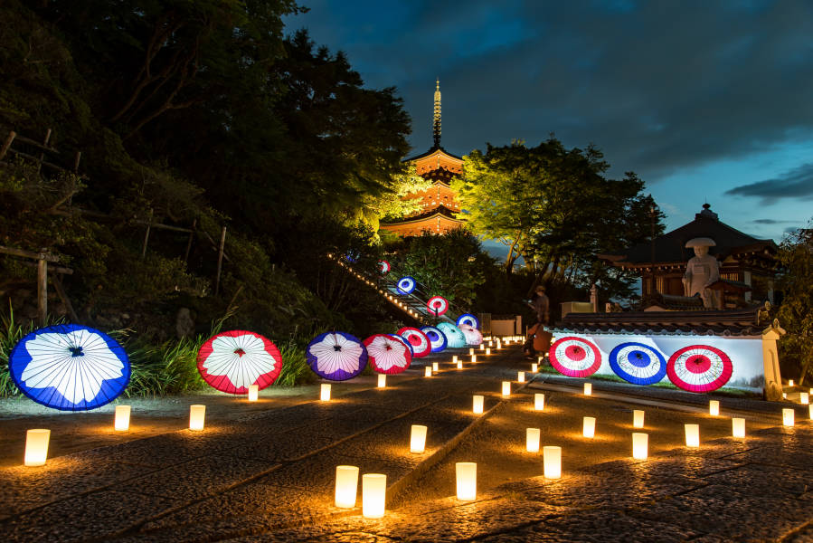
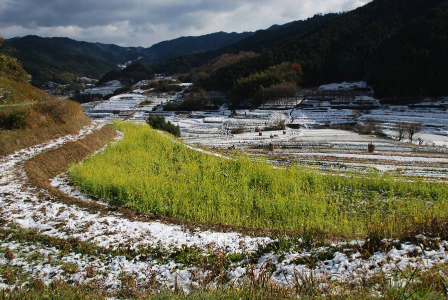

Naramachi
Tennoji, situado no sul de Osaka, é um distrito diversificado que combina modernidade com uma rica herança cultural. O bairro é famoso por abrigar o Shitennoji Temple, um dos templos budistas mais antigos do Japão, oferecendo uma visão profunda da história e espiritualidade japonesa. Tennoji também é conhecido por suas opções de compras e entretenimento, com destinos populares como o Abeno Harukas, o edifício mais alto do Japão, que proporciona vistas panorâmicas deslumbrantes da cidade a partir de seu observatório. O Tennoji Park é um grande espaço verde perfeito para passeios relaxantes, e também abriga o Tennoji Zoo e o Osaka City Museum of Fine Arts. O distrito é um paraíso gastronômico, com uma ampla gama de restaurantes e izakayas oferecendo pratos deliciosos. À noite, Tennoji ganha vida com uma animada cena noturna, incluindo bares e pubs movimentados. Com suas diversas atrações e atmosfera acolhedora, Tennoji é um destino imperdível para quem visita Osaka.
 

Asuka
Tennoji, situado no sul de Osaka, é um distrito diversificado que combina modernidade com uma rica herança cultural. O bairro é famoso por abrigar o Shitennoji Temple, um dos templos budistas mais antigos do Japão, oferecendo uma visão profunda da história e espiritualidade japonesa. Tennoji também é conhecido por suas opções de compras e entretenimento, com destinos populares como o Abeno Harukas, o edifício mais alto do Japão, que proporciona vistas panorâmicas deslumbrantes da cidade a partir de seu observatório. O Tennoji Park é um grande espaço verde perfeito para passeios relaxantes, e também abriga o Tennoji Zoo e o Osaka City Museum of Fine Arts. O distrito é um paraíso gastronômico, com uma ampla gama de restaurantes e izakayas oferecendo pratos deliciosos. À noite, Tennoji ganha vida com uma animada cena noturna, incluindo bares e pubs movimentados. Com suas diversas atrações e atmosfera acolhedora, Tennoji é um destino imperdível para quem visita Osaka.
 